Coop Term 1 - CRA
May - August 2024
About the Company
For my first coop term, I worked at the Canada Revenue Agency. As an agency under the federal government of Canada, the CRA is in charge of all taxes and benefits for Canadians.
The CRA’s mission is to “Administer tax, benefits, and related programs, and ensure compliance on behalf of governments across Canada, thereby contributing to the ongoing economic and social well-being of Canadians.”As of May 2023, over 62,000 full-time employees were working for the agency across Canada. More specifically, there are 13 headquarters branches and 4 regions that make up the organizational structure of the CRA. One of the headquarters branches is the Informational Technology Branch (ITB) and as of February 2022, there are approximately 4,330 full-time employees. ITB is responsible for providing IT infrastructure for CRA delivery systems with the Finance and Administration Branch along with supporting all CRA employees with the tools they need to help Canadians. I worked in the ITB branch as an IT developer on a front-end application.
Goals
My team works on a Java Swing application and my job involves fixing bugs on the front end. Based on my
job, I had the following goals I wanted to accomplish before the end of my work term. My goals included
improving my communication skills, organization skills and technological literacy.
To improve my communication skills, I became the scrum leader once a month for a week to keep track of the
issues my team was working on. This allowed me to learn about the ongoing projects/issues and the steps we
take to resolve them. This was valuable for me as I learned about the various roles my team members have
(Specialist, Developer, Tester etc.) and if there are overlapping issues. As everyone on my team works
remotely,
our daily scrum meetings allow us to update each
other about the tasks we are working on and if we need input from other members of the team. Being the scrum
leader helped me take on a leadership role for the meeting, interact with all my team members, and write
down any updates the team needs to know. Over time, I was able to better communicate with my team as I
learned about their tasks and could ask specific and detailed questions about their work.
For technological literacy, I have learned about the various tools we use at our agency. As my team mainly
uses Java, I have used the skills I learned from the OOP course at the University of Guelph and applied
those principles when working on tickets. This was also the first time I contributed to a repository with
multiple people. This experience improved my knowledge of git and git standards as tracking our changes is
important when looking back at the old code. Although I did not work on the back end, I needed to understand
how it connects to our front end to describe the issue with the appropriate team. Thus, I learned about how
our weblogic server is used in our application as well as some SQL and Cobol. I also became familiar with
the Eclipse IDE and the JIRA workflow.
Lastly, I also wanted to improve my organizational skills. As I had to work on multiple tickets at the same
time, I wanted to keep track of my progress on my tickets accurately. I decided to use an Excel spreadsheet
and record my progress in multiple places to keep track of my workflow. I used the spreadsheet to keep track
of all my current and future tasks and what needed to be accomplished. During the scrum meeting, I would
update the team with my current tasks and write down their deadlines. Lastly, at the end of the day, I made
a list of all the work I completed and sent it to my team. By recording my tasks in multiple places, it was
easy to track my progress and work on multiple issues at the same time.
Overall, I believe that I have accomplished all of these goals as all of the experiences above helped me
strengthen my communication, technological literacy, and organizational skills. I hope to continue working
on these goals and create new ones based on the new problems I am working on at the CRA for my next work
term.
Job Description
My job involves fixing bugs that occur in our Java Swing application. As I have taken the OOP course and created a Java Swing application on my own, I have applied these skills directly to my work at the CRA. Using these skills on a much larger application with many connected components (weblogic, SQL, etc.) helped me learn about how interconnected bigger programs can become. The most interesting part of the project was learning about how our tax application is used and the many nuances that come up when creating a large application. Learning about the backend and how the taxpayer’s information is passed to our applications helped me understand how the consumer uses our program and the impact it has. Thus, coordinating my code changes with other teams, having routine checks, and communicating with clients were an important and interesting part of my job to make sure the application is working correctly. Overall, knowing that these changes will directly affect and help many Canadians makes my job meaningful!
Conclusion
Overall, I enjoyed having my first coop term at the CRA. It was a great opportunity to apply the skills I learned in university to a larger scale application. I have learned many hard skills (such as coding practices, git, using the eclipse IDE, etc.) and improved many soft skills (leading a team meeting, explaining bugs to other teams, organizing and tracking my work, etc.). I hope to continue improving these skills and learning more about the industry during my next work term wtih the CRA!
Acknowledgements
I would like to thank all of my team members that have helped me learn to become a developer at the CRA! They have answered so many of my questions and helped me learn about developer practices. I would also like to thank the CS coop coordinators and the SOCS program counselors for answering all of my questions during my first coop work term!